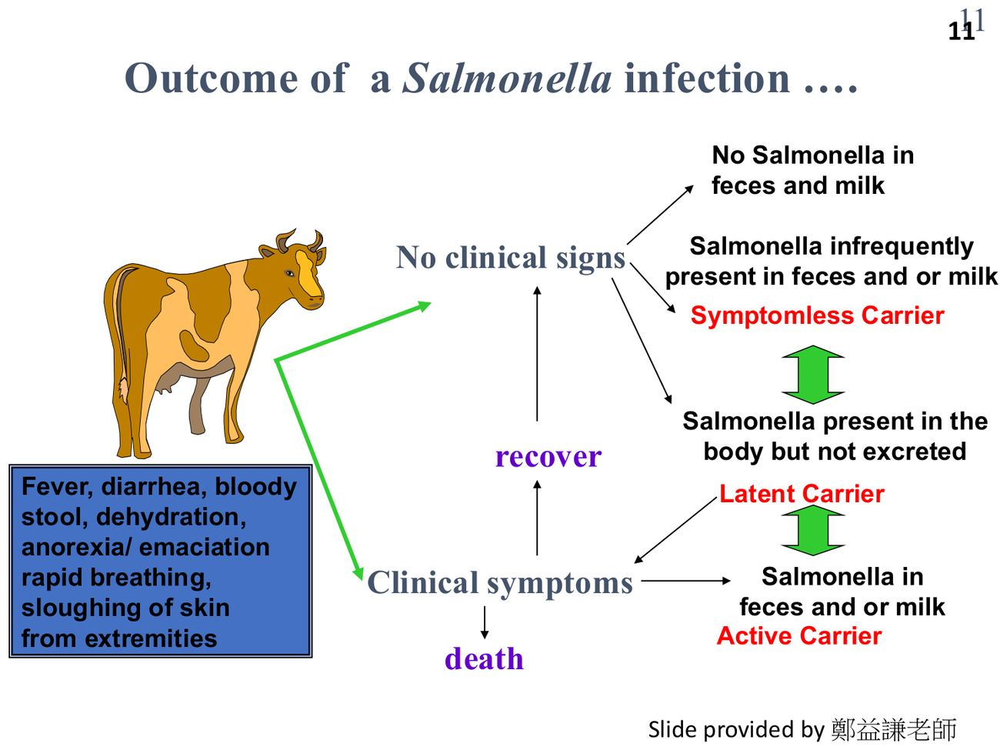
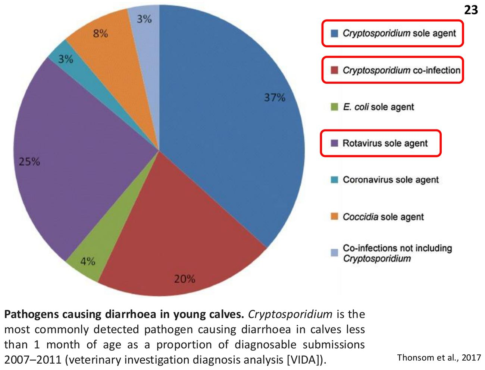

大方向與重點摘要
- 這章在講什麼
- 〈Bovine Infectious Disease〉講義第一部分 Gastrointestinal Diseases 的五個病：牛沙門氏菌症（bovine salmonellosis）、牛隱孢子蟲症（bovine cryptosporidiosis）、牛病毒性下痢（bovine viral diarrhea, BVD）、牛冬季下痢（winter dysentery, WD）、牛輪狀病毒（bovine rotavirus, BRV）。呼吸道疾病見牛傳染病（二），其他疾病見牛傳染病（三）。
- 為什麼重要
- 下痢是仔牛第一大死因（見仔牛疾病頁）；其中沙門氏菌（S. Typhimurium、S. Dublin）、隱孢子蟲（C. parvum）、輪狀病毒都是人畜共通；BVD 造成免疫抑制、繁殖失敗與持續感染牛，是牛群長期的經濟損失。
- 這章要抓的重點
-
- 沙門氏菌：S. Dublin 是牛適應型，較易造成侵襲性、全身性疾病，常以呼吸道症狀表現；好發 2–12 週齡；三種帶原者（活動、無症狀、潛伏）；後期可見末端乾性壞疽；疫苗為活減毒全菌苗。
- 隱孢子蟲：C. parvum 人畜共通；1–3 週齡仔牛 70% 糞便可檢出卵囊；卵囊 4–5 μm、抗氯等多數消毒劑；5–17 個卵囊就能致病；抗酸染色；1993 年密爾沃基事件 40 萬人發病。
- BVD 病原：Pestivirus、黃病毒科；BVDV-1、-2、-3（HoBi-like）；CP 與 NCP 兩生物型（生物型不代表致病力）；免疫抑制。
- PI 牛：懷孕前 4 個月（< 120 天）感染 NCP 株 → 持續感染（PI），是牛群主要傳染源；牛群 PI 盛行率約 1–2%；90–150 天感染 → 先天缺陷。
- BVD 病型：急性 BVD（高發病、低死亡）、重度急性 BVD（NCP BVDV-2、死亡率 25%、血小板減少出血）、黏膜病（PI 牛再感染 CP 株、死亡率 100%、6 月齡–2 歲）。
- BVD 控制：找出並淘汰 PI 牛、種母牛接種防胎兒感染、懷孕牛不建議用 MLV。
- 冬季下痢：牛冠狀病毒（BCoV），成牛爆發性下痢、常出血性、乳量大降；發病率 30–50%、死亡率低；沒有市售疫苗。
- 輪狀病毒：呼腸孤病毒科、無封套、11 段 dsRNA；1 月齡內仔牛急性下痢最常見病原；95% 為 A 群；感染小腸絨毛中上段成熟腸上皮；潛伏 12–36 小時；7–10 日齡最易感；控制靠疫苗。
- 容易混淆
- CP vs NCP：只有 NCP 能在胎兒建立持續感染；黏膜病＝PI 牛（NCP）再遇到 CP 株。生物型不代表致病力（重度急性 BVD 是 NCP BVDV-2）。冠狀病毒 vs 輪狀病毒：BCoV 感染大小腸、也有呼吸道向性，成牛的冬季下痢；輪狀病毒只感染小腸絨毛上段，主要是 1 月齡內仔牛。S. Typhimurium vs S. Dublin：前者宿主廣（人、牛、羊、豬），後者牛適應型、較常全身性與呼吸道表現。
- 考試可能怎麼問
（推測） - S. Dublin 的特性與三種帶原者；沙門氏菌的致病機轉（SPI-1、SPI-2）；隱孢子蟲卵囊大小、抵抗力、感染劑量與染色法；BVD 的分類、生物型、PI 形成條件、各病型的發病與死亡率；黏膜病機轉；BVD 控制；冬季下痢病原與表現；輪狀病毒構造、感染部位、易感日齡；三種病毒的疫苗有無。
內容以老師講義為主體。標示「補充」的段落（含「讀書補充Note」）是講義以外的延伸；標示「推測」的是依講義強調處推測的出題方向，不是考古題。考試範圍以老師上課為準。圖片為老師講義截圖（部分投影片原出處為鄭益謙老師或文獻）。
牛沙門氏菌症 Bovine Salmonellosis
牛最重要的兩個血清型：S. Typhimurium 什麼動物都感染，S. Dublin 專門適應牛、更容易跑到全身。
病原與流行病學（p.4–6）必考
- 牛可分離出很多 Salmonella 血清型；最重要的是 S. Typhimurium 與 S. Dublin，兩者都是人畜共通。
- S. Typhimurium：可感染多種動物，包括人、牛、羊、豬。
- S. Dublin：牛適應型（cattle-adapted），較容易造成侵襲性／全身性疾病。
- 通常為地方性（endemic），有時爆發大流行；美國與加拿大分離株常見多重抗藥性。
| 類型（Uzzau et al., 2000） | 例子 | 表現 |
|---|---|---|
| 非限制型 unrestricted | Typhimurium、Enteritidis | 在多種動物的幼齡動物造成腸炎 |
| 宿主適應型 host-adapted | Dublin（牛）、Choleraesuis（豬） | 在其特定宿主造成腸炎或全身性疾病；偶爾感染人（Dublin 也偶感染羊） |
| 宿主限制型 host-restricted | Typhi、Paratyphi（人）、Abortusovis（羊）、Gallinarum（禽）、Typhisuis（豬）、Abortusequi（馬） | 只感染特定宿主 |
傳播（p.7）必考
- 糞口傳播：來源為活動帶原者、無症狀帶原者、潛伏帶原者。
- 垂直傳播（子宮內）。
- 氣膠傳播（可能）。
致病機轉與免疫（p.8）理解
- S. Dublin 已適應逃避宿主免疫。
- 毒力因子：沙門氏菌致病島（Salmonella Pathogenicity Islands, SPI）、毒素、鞭毛（運動）、線毛（附著）。
- S. Dublin 帶有 SPI-1 與 SPI-2 的第三型分泌系統（T3SS）：SPI-1 → 侵入腸道；SPI-2 → 擴散到全身。
- 宿主免疫決定結果：免疫系統未成熟的幼齡仔牛 → 高發病、高死亡 → 疫苗與初乳很重要。
臨床表現（p.9–10）必考
- S. Dublin 比其他血清型嚴重；表現依年齡、牛群狀況而異。
- 所有年齡都會感染，但最常見於 2–12 週齡仔牛。
- 未曾接觸的牛群：病原迅速傳播、爆發。
- 大多數沙門氏菌感染表現為腸胃道疾病（下痢），但 S. Dublin 最常表現為呼吸道疾病。
仔牛
- 高燒、意識遲鈍、厭食
- 肺炎、呼吸窘迫
- 脫水、敗血症
- 猝死（甚急性）
- 轉為慢性：生長遲緩、關節炎、軟便
成牛
- 輕微發燒、輕度下痢
- 乳量突然下降
- 少見血便
- 產生潛伏帶原者
感染後的結局：三種帶原者（p.11）必考
| 結局 | 菌在哪裡 |
|---|---|
| 活動帶原者 active carrier | 有臨床症狀後恢復，糞便和／或乳汁中有菌 |
| 無症狀帶原者 symptomless carrier | 沒有症狀，糞便和／或乳汁中偶爾有菌 |
| 潛伏帶原者 latent carrier | 菌在體內但不排出（可轉為排菌） |
| 清除 | 糞便與乳汁中都沒有菌 |

病變（p.12–18）理解
- Pecoraro et al.（2017）提出 6 月齡以下荷蘭牛 S. Dublin 的組織病理病例定義：肺泡微血管嗜中性球增多，加上或不加肝細胞壞死與副傷寒肉芽腫、脾炎、淋巴結炎（p.16）。
- 各器官病變分數以肺最常見且嚴重（p.18 圖）。
診斷（p.19）必考
- 培養或 PCR 檢出病原：糞便（培養敏感度相對低）、剖檢檢體（建議用來培養）、懷疑菌血症時用血液。
- 剖檢：沒有特徵病灶；常見肺充血、化膿性肺炎、卡他性出血性腸炎、腸繫膜淋巴結炎、肝脾腫大 → 敗血症。
- ELISA：用血清與乳汁做監測。
預防與控制（p.20）必考
- 目標：減少病原暴露、增加抵抗力。
- 牧場管理；衛生：可用鹵素（稀釋漂白水）、酚類、四級銨、氧化劑（過氧單硫酸鉀）。
- 生物安全：控制鼠類。
- 疫苗：活減毒全菌苗；體液與細胞免疫都重要。
補充：沙門氏菌是細胞內菌，所以細胞免疫重要，這也是講義強調活減毒疫苗的原因。S. Dublin 帶原牛會從乳汁排菌，喝生乳是人的感染途徑之一（講義 p.5 引用疾管署法國 S. Dublin 新聞）。
牛隱孢子蟲症 Bovine Cryptosporidiosis
仔牛下痢最常檢出的病原之一：卵囊小、量少就能感染、氯都殺不死，還會傳給人。
病原與流行病學（p.22–23）必考
- 全球分布；種類與基因型很多。
- C. parvum（舊稱 C. parvum type II）：人畜共通，可感染人與仔牛等多種動物。
- C. hominis（舊稱 type I）：宿主範圍窄，主要人傳人。
- 牛也可分離到 C. andersoni、C. bovis、C. ryanae。
- C. parvum 是仔牛下痢常見原因：1–3 週齡乳用仔牛 70% 糞便可檢出卵囊。
- 台灣（李睿彧，2018）：小牛 C. parvum 盛行率 26.5%（60/226）、成牛 19.7%（39/198）、場陽性率 90%（18/20）。

密爾沃基事件（p.24）理解
1993 年 4 月美國威斯康辛州密爾沃基（Milwaukee）供水受 C. parvum 汙染，推測與上游農場排水有關；估計 403,000 人發病、4,400 人住院、數名愛滋病人死亡，是美國最嚴重的一次爆發。多數人一到兩週康復，但兒童、老人與免疫低下者可能重症。
C. parvum 的特性（p.26）必考
| 項目 | 內容 |
|---|---|
| 宿主 | 沒有宿主專一性 |
| 生活史 | 在單一宿主內 12 天完成 |
| 卵囊 | 很小，直徑 4–5 μm |
| 環境抵抗力 | 環境中可存活數個月；抵抗大多數消毒劑，包括氯 |
| 寄生部位 | 腸胃道、膽管、胰臟、呼吸道、扁桃腺 |
傳播（p.28）必考
- 糞口傳播（厚壁卵囊），吃進受汙染的食物或水。
- 極少量卵囊就能感染：5–17 個卵囊就足以造成下痢與排卵囊。
臨床表現（p.29–30）必考
- 依免疫而定：從無症狀（> 6 週齡）、自限性到偶爾致命的下痢。
- 1–3 週齡仔牛特別易感：持續下痢、脫水、體重下降、發育差。
- 常合併輪狀病毒或冠狀病毒續發感染。
診斷（p.31–32）必考
- 糞便或飲水檢查卵囊：抗酸染色（acid-fast）、單株抗體免疫螢光、EIA、PCR。
- ELISA 抗體檢測；組織病理。
病例（p.33–36）理解
8 週齡仔牛；同場多數仔牛下痢、母牛無明顯症狀。照片可見後軀糞便沾黏、眼球凹陷（脫水）；空腸切片在腸上皮頂端有大量小而圓的藍色蟲體（1.5–4 μm 球形原蟲）。
預防與控制（p.37）必考
- 衛生，降低環境卵囊量。
- 足夠的初乳。
- 輸液與電解質支持療法。
- 抗隱孢子蟲藥物效果有限。
- 部分地區已有母牛疫苗。
補充：因為抗氯，一般漂白水消毒效果差；實務上靠清除糞便、乾燥、高溫蒸氣清洗與個別欄位。照顧下痢仔牛的人要戴手套洗手（人畜共通）。
牛病毒性下痢 Bovine Viral Diarrhea (BVD)：病原、傳播與持續感染
BVD 的關鍵在「PI 牛」：胎兒早期感染 NCP 株，出生後終生帶毒、排毒，是牛群裡的病毒工廠。
病原（p.39）必考
| 項目 | 內容 |
|---|---|
| 分類 | 黃病毒科（Flaviviridae）、瘟疫病毒屬（Pestivirus） |
| 三個種 | BVDV-1（Pestivirus bovis）、BVDV-2（Pestivirus tauri）、HoBi-like virus 或 BVDV-3（Pestivirus brazilense） |
| 生物型 | 致細胞病變型（cytopathic, CP）與非致細胞病變型（non-cytopathic, NCP）；生物型不代表致病能力 |
| 宿主 | 牛、羊、豬、山羊與其他野生動物 |
| 特性 | 免疫抑制 |
補充：豬瘟病毒（CSFV）與羊的邊界病病毒（BDV）同為 Pestivirus；BVDV 感染豬可干擾豬瘟血清檢測。
流行病學（p.40）理解
- BVDV 在牛群廣泛存在，是因為胎兒發育前 4 個月感染 NCP 株造成的持續感染（persistently infected, PI）動物。
- 盛行率依疫苗、飼養密度、畜舍與管理而異。
- 野外 BVDV-1b 比例在 2001 年後從 43% 增加到 75–100%，可能與使用 1a、2a 株疫苗有關。
- 經濟損失：繁殖失敗、仔牛健康變差、傳染病風險增加、乳量下降、死亡。
傳播（p.41）必考
- 主要傳染源是帶毒血症的 PI 動物；牛群 PI 平均盛行率約 1–2%。
- 病毒存在所有分泌物與排泄物。
- 途徑：直接接觸（鼻對鼻）、經胎盤、間接接觸（空氣、蒼蠅、汙染物）、人工授精／胚胎移植、受汙染的疫苗（細胞培養用的胎牛血清 FCS）。
致病機轉與免疫（p.42）必考
- 病毒感染先天免疫細胞：嗜中性球、單核球、巨噬細胞、樹突細胞 → 免疫抑制 → 可能參與 牛呼吸道疾病（BRD）的發生。
- 醣蛋白 E2 是抗體的主要抗原目標。
- 自然感染或 MLV 疫苗後產生長期免疫。
- 高中和抗體可防止同源攻毒的疾病，但動物仍可能出現病毒血症並從鼻分泌物排毒。
胎兒感染的結果（p.43–45）必考
| 感染時間（懷孕日） | 結果 |
|---|---|
| < 120 天（NCP） | 胎兒死亡、流產、木乃伊胎；或出生為 PI |
| 90–150 天（NCP） | 先天缺陷：小頭症、水腦（hydranencephaly）、白內障、骨硬化症、肺發育不全… |
| 懷孕後期（圖） | 仔牛出生時血清陽性（有抗 BVDV 抗體），不是 PI |
兩種生物型都能穿過胎盤，但只有 NCP 株能在胎兒建立持續感染（p.44）。胎兒在免疫系統成熟前（約 120 天前）遇到病毒，會把病毒當成「自己」→ 免疫耐受 → 終生帶毒但沒有抗體（機轉為補充）。
BVD 的臨床病型：急性、重度急性、黏膜病
三種病型用「誰感染、哪一型病毒、死亡率」區分。
三種出生後的病型（p.46–48）必考
| 典型／急性 BVD | 重度急性 BVD | 黏膜病（Mucosal Disease, MD） | |
|---|---|---|---|
| 誰 | 6 月齡以上、免疫正常的牛，暫時性感染 | 所有年齡都易感 | PI 牛出生後再感染 CP 株（內源或外源） |
| 病毒 | 通常 NCP | 通常 NCP BVDV-2 | CP（＋原本的 NCP） |
| 發病率／死亡率 | 高發病、低死亡 | 高發病、高死亡（25%） | 中等發病、死亡率 100% |
| 年齡 | > 6 月齡 | 所有年齡 | 通常 6 月齡–2 歲 |
| 症狀 | 多為不明顯或亞臨床；可有發燒、輕度眼鼻分泌物、呼吸急促、下痢；暫時性白血球減少 → 續發感染 | 高燒（可達 42°C）、呼吸窘迫、厭食、大量水樣下痢、無乳；血小板減少／出血症候群；臨床上無法與 MD 區分 | 高燒、白血球減少、水樣下痢、食慾差、脫水、鼻孔與口腔糜爛，發病後數天內死亡；分急性與慢性（最終死亡） |
| 結果 | 終生免疫 | 爆發後幾個月常有 PI 仔牛出生 | 死亡 |
「PI ＋ CP ＝ MD ＝ 100% 死」。重度急性 BVD 的死亡率 25%、會出血，是 NCP BVDV-2；別因為它很兇就以為是 CP。
鑑別：牛瘟與惡性卡他熱（p.49）理解
| 牛瘟 Rinderpest | 惡性卡他熱 Malignant Catarrhal Fever | |
|---|---|---|
| 病原 | 副黏液病毒科、麻疹病毒屬（morbillivirus）；已宣布根除 | 疱疹病毒科、γ 疱疹病毒 |
| 特徵 | 發燒、口腔糜爛、下痢、淋巴組織壞死、高發病高死亡 | 淋巴增生、血管炎、糜爛至潰瘍性黏膜病灶 |
| 肉眼病變 | 口腔糜爛潰瘍出血；Peyer's patch 出血壞死水腫；盲腸、結腸、直腸出血充血（斑馬紋） | 淋巴結腫大水腫（除了野牛）；黏膜充血水腫、糜爛潰瘍；淋巴增生性血管炎造成器官腫大 |
| 組織病變 | 淋巴壞死；腸隱窩壞死；口腔上皮融合細胞；細胞質與核內嗜酸性包涵體；Peyer's patch 病變最嚴重 | 中型血管廣泛性動靜脈炎；大型淋巴球增生；消化、泌尿、呼吸道黏膜潰瘍 |
BVD 的預防與控制
控制 BVD 就是控制 PI 牛：找出來、淘汰、不讓新的進來、保護懷孕母牛。
控制策略（p.50）必考
- 檢出並淘汰 PI 動物。
- 防止感染被帶進牛群。
- 種母牛接種疫苗以預防胎兒感染。
- 死毒與 MLV 疫苗都有；但 BVDV 的抗原多樣性可能影響疫苗效果。
- 懷孕牛不建議用 MLV 疫苗。
- 根除：檢出並淘汰 PI 動物、不接種疫苗、嚴格生物安全防止 PI 動物進入。
補充：PI 牛常用耳刻（ear notch）組織做抗原 ELISA 或 PCR 檢測；檢出陽性後隔 3–4 週再驗一次，以區分暫時性感染與 PI。根除計畫「不打疫苗」是為了讓血清監測（抗體）能偵測新感染。
讀書補充Note - PI 牛是什麼？
1. 一句話：PI＝Persistently Infected（持續感染）。PI 牛＝胎兒期被 NCP 株感染、出生後終生帶毒、終生排毒的牛，是 BVD 在牛群裡一直存在的原因。
2. 怎麼形成（講義 p.40–45）
- 母牛在懷孕前 4 個月（約 120 天以前）感染 BVDV；
- 病毒是非致細胞病變型（NCP）——兩種生物型（CP、NCP）都能穿過胎盤，但只有 NCP 株能在胎兒建立持續感染；
- 胎兒免疫系統在 120 天前還沒成熟，把病毒當成「自己」→ 免疫耐受（機轉為補充）；
- 出生後終生帶毒排毒，血清通常沒有抗體。
3. 對比：懷孕後期感染 → 仔牛出生時血清陽性（有抗體）、不是 PI；懷孕 90–150 天感染 NCP → 可能造成先天缺陷（小頭症、水腦、白內障、骨硬化症等）；出生後才感染 → 只是暫時性感染，之後有免疫力。
4. 為什麼是「病毒工廠」：PI 牛是最主要的傳染源，病毒存在於所有分泌物與排泄物（鼻對鼻、空氣、糞尿）；牛群中 PI 牛平均盛行率約 1–2%；所以「控制 BVD ＝ 控制 PI 牛」。
5. PI ＋ CP ＝ 黏膜病（MD）＝ 100% 死：PI 牛出生後再被 CP 株感染（外來或體內突變），發生黏膜病，通常 6 月齡到 2 歲。
6. 怎麼找出 PI 牛：常用耳刻（ear notch）組織做抗原 ELISA 或 PCR；陽性後隔 3–4 週再驗一次，暫時性感染的病毒會消失、PI 牛持續陽性（補充）。PI 牛通常沒有抗體，所以不能只靠抗體檢測找。
7. 對應控制策略：檢出淘汰 PI 牛（去掉傳染源）；防止新引進的牛（可能是 PI 或懷 PI 胎兒）帶進病毒；種母牛接種疫苗預防胎兒感染；懷孕牛不用 MLV；根除時不接種疫苗，讓血清監測（抗體）能偵測新感染。
牛冬季下痢 Winter Dysentery (BCoV)
成牛突然整群拉血便、乳量掉一週：牛冠狀病毒。
病原（p.52）必考
- 牛冠狀病毒（bovine coronavirus, BCoV）；一個血清型。
- 造成成牛下痢（冬季下痢 WD），也造成仔牛下痢（calf diarrhea, CD）。
- 也能造成仔牛與成牛的呼吸道疾病：腸道與呼吸道雙向性；感染小腸與大腸。
- 牛群中普遍存在，在亞臨床感染牛體內持續存在。
- 高發病率（30–50%）、低死亡率。
- 糞口傳播；糞便與鼻分泌物是主要傳染源。
臨床表現（p.53）必考
- 潛伏期 3–7 天。
- 先短暫發燒，接著爆發性下痢。
- 糞便水樣、常帶血（出血性）、均質、沒什麼臭味。
- 乳量明顯下降，可持續一週。
- 可有呼吸道症狀：咳嗽、鼻淚分泌物。
- 死亡通常與嚴重失血有關。
預防與控制（p.54）必考
- 沒有市售疫苗；沒有特定控制方法。
- 衛生；減少牛舍過度擁擠。
補充：講義寫冬季下痢「沒有市售疫苗」，指的是成牛冬季下痢；仔牛下痢的多價疫苗（含冠狀、輪狀、大腸桿菌）給懷孕母牛接種以提高初乳抗體，是另一回事。
牛輪狀病毒 Bovine Rotavirus (BRV)
1 月齡內仔牛急性下痢最常見的病原：潛伏期極短、感染小腸絨毛頂端。
病原（p.56）必考
- 呼腸孤病毒科（Reoviridae）、輪狀病毒屬。
- 無封套，11 段 dsRNA → 有基因重組（reassortment）的可能。
- 1 月齡以下仔牛急性下痢最常見的病原。
- 七個血清群；95% 為 A 群，野外也有 B、C 群。
- 也是人與動物急性下痢的主要病原 → 人畜共通與經濟重要性。
致病機轉（p.57）必考
- 糞口傳播（也有空氣與水傳的報告）。
- 感染小腸絨毛中段與頂端的成熟、不分裂的腸上皮細胞。
- 腸上皮破裂、脫落 → 釋出病毒感染鄰近細胞。
補充：絨毛頂端的成熟細胞負責吸收與分泌雙醣酶；它們脫落後由隱窩的未成熟細胞取代 → 吸收不良、乳糖消化不良 → 滲透性下痢。
臨床表現（p.58–59）必考
- 嚴重度取決於初乳攝取、年齡與健康、母牛免疫、暴露量、病毒毒力、續發病原。
- 潛伏期短（12–36 小時）；出生 24 小時內也可能發病。
- 1 天至 3 週齡易感，7–10 日齡最易感。
- 急性下痢、脫水、虛弱、眼球凹陷；單純感染死亡率低。
- 合併 E. coli → 下痢與脫水更嚴重，可能 24 小時內死亡。
控制與預防（p.60）必考
- 對化學消毒劑與防腐劑相對有抵抗力。
- 分布廣、在不同氣候都穩定、糞便排毒量高 → 不容易控制。
- 主要策略是疫苗；死毒與 MLV 疫苗都有。
鑑別比較 Comparison
五個腸胃道病放在一起比：病原類型、好發年齡、糞便、人畜共通、疫苗。
總表必考
| 沙門氏菌症 | 隱孢子蟲症 | BVD | 冬季下痢 | 輪狀病毒 | |
|---|---|---|---|---|---|
| 病原 | S. Dublin、S. Typhimurium（細菌） | C. parvum（原蟲） | BVDV-1、2、3（Pestivirus） | BCoV（冠狀病毒） | BRV A 群（Reoviridae） |
| 好發 | 2–12 週齡仔牛（全年齡） | 1–3 週齡 | 依胎齡與年齡；MD 6 月齡–2 歲 | 成牛（也有仔牛） | 1 天–3 週，7–10 日最易感 |
| 特徵 | S. Dublin 常表現呼吸道、敗血症；末端乾性壞疽 | 黃色芥末樣、自限性；卵囊 4–5 μm | 免疫抑制、繁殖失敗、PI | 爆發性出血性下痢、乳量降一週 | 急性下痢，合併 E. coli 很快死亡 |
| 發病／死亡 | 幼牛高發病高死亡 | — | 急性：高／低；重度：高／25%；MD：中／100% | 30–50%／低 | 單純感染死亡率低 |
| 人畜共通 | 是（兩者） | 是（C. parvum） | — | — | 講義列為人畜共通重要性 |
| 環境抵抗 | 一般消毒劑有效 | 抗氯、存活數月 | — | — | 對化學消毒劑相對有抵抗 |
| 疫苗 | 活減毒全菌苗 | 部分地區有母牛疫苗 | 死毒、MLV（懷孕牛不建議 MLV） | 沒有市售 | 死毒、MLV（主要策略） |
對照仔牛疾病頁：該講義寫 ETEC 約 3 日齡、隱孢子蟲 1–4 週、沙門氏菌 2–6 週；本講義寫隱孢子蟲 1–3 週、沙門氏菌 2–12 週。兩份講義的範圍略有不同，作答時注意是哪位老師的範圍。
考試方向（推測）
以下是依講義強調的內容推測的出題方向，不是考古題，考試範圍以老師上課為準。
| 可能考法 | 答題重點 |
|---|---|
| 牛最重要的沙門氏菌 | S. Typhimurium（宿主廣）、S. Dublin（牛適應型、全身性、呼吸道）；皆人畜共通 |
| 三種帶原者 | 活動（糞乳排菌）、無症狀（偶爾排菌）、潛伏（體內不排） |
| SPI-1 與 SPI-2 | T3SS；SPI-1 侵入腸道、SPI-2 全身擴散 |
| 沙門氏菌診斷與預防 | 培養／PCR（剖檢檢體）、剖檢無特徵病灶、ELISA 監測；消毒、鼠類控制、活減毒疫苗 |
| C. parvum 特性 | 無宿主專一性、12 天、卵囊 4–5 μm、存活數月、抗氯；5–17 卵囊致病；抗酸染色 |
| BVD 分類與生物型 | Flaviviridae、Pestivirus；BVDV-1/2/3；CP 與 NCP，生物型不代表致病力 |
| PI 形成 | 懷孕 < 120 天感染 NCP；PI 是主要傳染源，牛群約 1–2% |
| 先天缺陷 | 90–150 天；小頭、水腦、白內障、骨硬化、肺發育不全 |
| 三種病型 | 急性（高發低死、終生免疫）、重度急性（NCP BVDV-2、25%、血小板減少）、MD（PI＋CP、100%、6 月–2 歲） |
| BVD 控制 | 淘汰 PI、防引入、種母牛接種、懷孕牛不用 MLV；根除不打疫苗 |
| 冬季下痢 | BCoV；爆發性出血性下痢、乳量降一週、30–50%、無市售疫苗 |
| 輪狀病毒 | Reoviridae、無封套、11 段 dsRNA、A 群 95%；小腸絨毛頂端成熟上皮；12–36 h；7–10 日齡；疫苗 |
練習題 Practice Quiz
< 120 天感染 NCP 株：胎兒死亡、流產、木乃伊胎，或出生為 PI；90–150 天：先天缺陷（小頭症、水腦、白內障、骨硬化、肺發育不全）；懷孕後期：出生仔牛血清陽性、非 PI（p.43–44）。只有 NCP 株能建立持續感染。